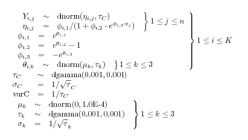

Info Menu
General properties
This menu allows the user to obtain more information about how the software is working.Open Log
This option opens a log window to which error and status information is written.Clear Log
This option option clears all the information displayed in the log window.Uninitialized nodes
Shows nodes in the compiled model that have not been initialized yet. A new window is opened for each chain.Again consider the Seeds example, compile the model for a single chain and load the initial value file and then selected the Uninitialized node option, a window will open containing
The random effects b[1] .. b[21] are unintialized.
Updaters by name
List the nodes which have associated updaters in alphabetical order with their updater algorithm. For block updating algorithms the first component in the block is shown followed by the other components of the block in brackets. Note for block updaters the first component might not be the node with the first name alphabetically.For the Seeds example this option opens a window containing
Updaters by depth
List the nodes which have associated updaters in the reverse topological order to which they occur in the graphical model with their updater algorithm. Nodes in the model which are forward sampled have a negative depth. For block updating algorithms the first component in the block is shown followed by the other components of the block in brackets. Note for block updaters the first component might not be the node with the first name alphabetically.This option will show hidden updaters in the model created by data augmentation algorithms.
For example if the Blockers example using a t distribution for the random effects is compiled this option will open a window containing
The variable names prefixed with aux. are for auxilliary variables introduced when the t distribution were re-written as a scale mixture of normals. delta.new is a stochastic node put in the model for making predictions, it is forward sampled and therefore has negative depth. It has an auxilliary variable [020FC910H] as a parent which is also forward sampled hence the depth of delta.new is -2.
Model
Opens a new window containing the BUGS language code describing the currently checked model. The model can be specified in the BUGS language or as a Doodle. Any comments in the original BUGS language description will be lost. The BUGS language code will be formatted in a standardized form.For example if the model described by this Doodle is checked the Model option will open a windows containing the BUGS language code below
![[infomenu4]](infomenu4.bmp)
Latex
Opens a new window containing Latex code describing the currently checked model. The model can be specified in the BUGS language or as a Doodle. Any comments in the original BUGS language description will be lost.
For example, if the following model is checked then the latex option will produce:
model {
for (i in 1:K) {
for (j in 1:n) {
Y[i, j] ~ dnorm(eta[i, j], tau.C)
eta[i, j] <- phi[i, 1] / (1 + phi[i, 2] * exp(phi[i, 3] * x[j]))
}
phi[i, 1] <- exp(theta[i, 1])
phi[i, 2] <- exp(theta[i, 2]) - 1
phi[i, 3] <- -exp(theta[i, 3])
for (k in 1:3) {
theta[i, k] ~ dnorm(mu[k], tau[k])
}
}
tau.C ~ dgamma(1.0E-3, 1.0E-3)
sigma.C <- 1 / sqrt(tau.C)
varC <- 1 / tau.C
for (k in 1:3) {
mu[k] ~ dnorm(0, 1.0E-4)
tau[k] ~ dgamma(1.0E-3, 1.0E-3)
sigma[k] <- 1 / sqrt(tau[k])
}
}
Processing the latex code gives
Data
This option displays all the variables in the model that are data as one Splus list object. Only nodes that are defined as data in data files are included: that is nodes that are logical functions of other data nodes are omitted. For the Seeds model the following window is produced, note that x12 although data in the model is omitted.
State
This option opens a window for each chain in the MCMC simulation showing the current values of the stochastic variable. For the Seeds example after 1000 updates the following output is produced
Metrics
This option opens a window which gives some information about the size and complexity of the compiled graphical model. For the Seeds example the following output is producedNode info
This dialog box allows information about particular nodes in the model to be obtained. The model must be compiled before this dialog can be used.
node: the name of the node for which information is required should be typed here or selected from the drop down list.
values: displays the current value of the node (for each chain if not data).
sampler: displays the type of updater used to sample from the node (if appropriate).
type: displays the type used to represent the node.
As an example of using this dialog compile the Seeds model and then type the node name alpha12 into the node field.
Clicking the value button opens a window displaying
The model has been compiled with one chain and the current value of the alpha12 variable is 0.0
Clicking on the sampler button opens a window displaying
The variable alpha12 has an associated updater using the UpdaterGLM.UpdaterLogit algorithm. This is a block updater, the other members of the block are shown in brackets, size is the number of components in the block and depth is the topological depth of the alpha12 variable in the graphical model. More detailed information about the updater can be gained by clicking on the blue diamond (see the blue diamond section in the developer manual). If the variable in the node field does not have an associated updater then no window will be opened.
Clicking on the type button opens a window displaying
The alpha12 variable in the model is represented by a node of type dnorm. More detailed information about the node can be gained by clicking on the blue diamond (see the blue diamond section in the developer manual).
Show Distribution
This option shows how the simulation would be split between multiple core for a given number of MCMC chains and a given number of cores. The number of chains and cores is specified in the model specification dialog and the model must be compiled. For the Seeds example with a single chain and two cores the following output is produced
Show Deviance Dist
This option shows how the calculation of deviance is split between cores when multiple cores are used in the simulation. Deviance consists of a sum of terms for each data node in the graphical model. The terms which are calculated on each core are listed. For the Seeds example the following output is produced
Note if the graphical model is large with lots of data this option can produce a huge amount of out put.
Distributed graph...
This option shows how the nodes are distributed across cores, and provides links that help with debugging.
Distribution Info
This option provides information about the worker program created to run MCMC simulation for a particular graphical model on multiple cores. For the Inhaler example running two chains on four cores produces the following output
Modules
Displays all the modules (software components similar to dynamic link libraries) in use. A typical window produced by this option would look likeThe modules are arranged in a directed acyclic graph where Clients gives the number of children each module has. Version is the current version of the module, Maintainer is the person who maintains the model (some times this is unknown), Compiled was the date when the module was compiled and Loaded was the time at which the module was loaded. Note that the software can load new modules as it runs as required.
Memory
This option displays how much memory the software is using. It is displayed at the bottom left of the screen.